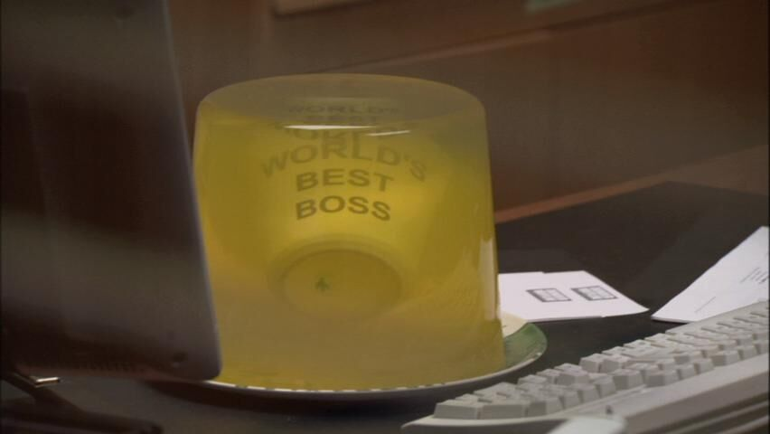
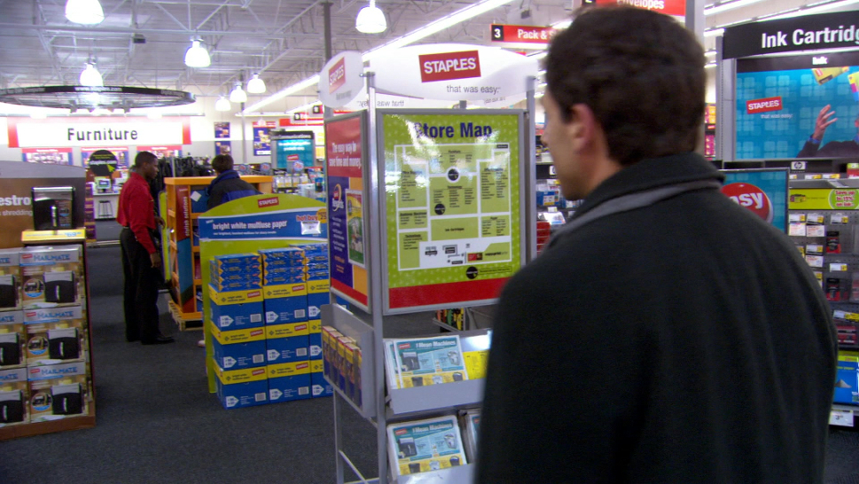
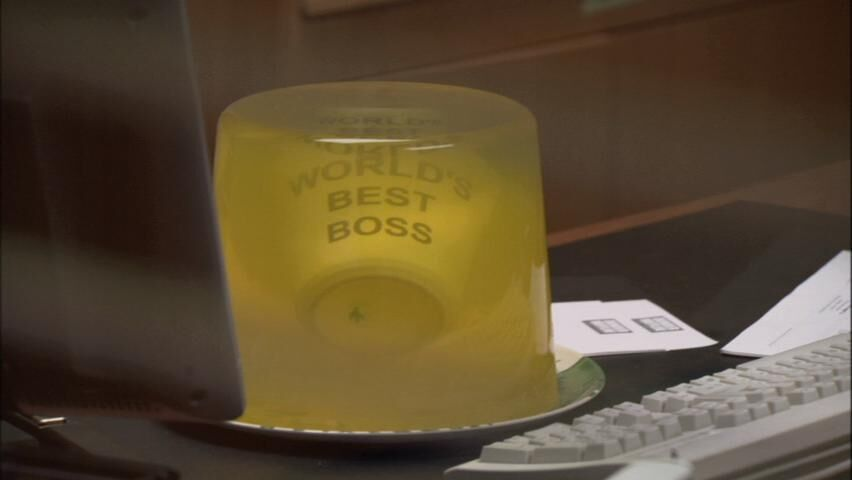
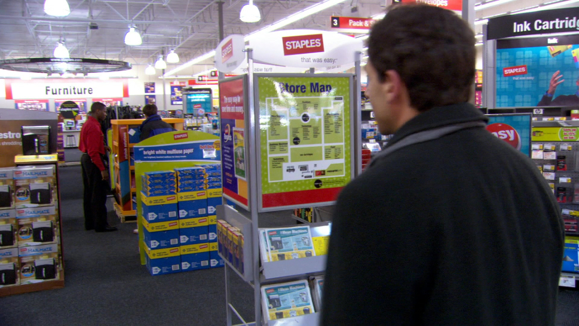

"An American Workpla(y)ce" is a theater adaptation of "The Office" (U.S) from the filmmaker behind "The Arrow Fish's Heart"! See everyone's favorite branch of Dunder Mifflin in a whole new light! With some minor modernizations, fresh additions, and new jokes, This adaptation will keep the spirit of the U.S show whilst also managing to feel unique and fresh, with a small bit of familiarity at the same time. You'll never look at paper quite the same ever again.
While some adaptations are either too faithful or not faithful enough, This adaptation undertakes the challenge like a champ. From the Jello prank to the business fraud, Faithful, This adaptation is. With new moments such as the "Money Tree" scene to the proposal, There's new moments galore, all in the name of "The Office". If you're wanting an adaptation that makes it its own, this is it. All your favorite moments and jokes are here + new, awesome moments with new jokes so funny and Office-esque you'll swear they were from the show, but nope. Original scenes written specifically for the play.
 He put my stuff in Jello again!
He put my mug in Jello!
Michael makes his trip to Staples to do something he should've done a long time ago.
He put my stuff in Jello again!
He put my mug in Jello!
Michael makes his trip to Staples to do something he should've done a long time ago.